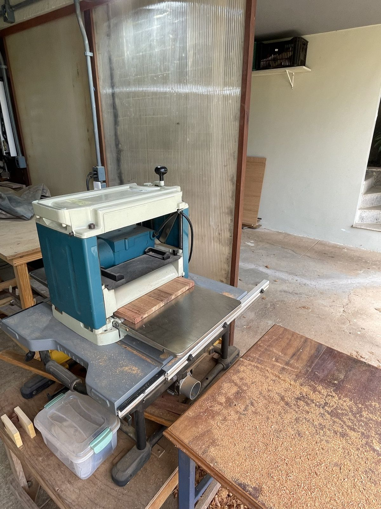

Galeria
A oficina, as ferramentas e algumas peças. Toque numa foto para abrir o artigo relacionado.
 Guias de rolamento da serra de fita
Guias de rolamento da serra de fita
A desengrossadeira e uma tábua de demolição O conserto da tábua da madeira albina
O conserto da tábua da madeira albina Lâmina, guias e mesa
Lâmina, guias e mesa Fim do curso no ateliê de Morito Ebine, com o banquinho feito em aula
Fim do curso no ateliê de Morito Ebine, com o banquinho feito em aula A lingueta de caixeta revelada
A lingueta de caixeta revelada Rolamento lateral e rolamento de encosto
Rolamento lateral e rolamento de encosto Broca chata de 35 mm
Broca chata de 35 mm